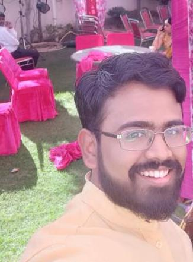

|  | Madhav Krishnan Vijayan
PhD Student in Quantum Information Theory I am a PhD candidate at Center for quantum software and information at the university of technology Sydney. I have a background in Physics and have been working on various aspects of quantum information for the last 6 years including quantum resource theories, quantum information, optical implementations etc. I am also passionate about teaching and been a tutor for many math and programming courses over the last couple of years. Currently interested in exploring and contributing to quantum technology development. Here is 5 min video on my reserach. |
Madhav writes about his interests here.
| Introduction to mathematical analysis & modelling | Aug 2020 - Nov 2020 |
| Tutorial for the Quantum Information course for PhD students | Aug 2020 |
| Introduction to linear dynamical systems | March 2020 - May 2020 |
| Introduction to mathematical analysis & modelling | Aug 2019 - Nov 2019 |
| Introduction to linear dynamical systems | March 2019 - May 2019 |
One-on-One Peer tutoring for the following units:
|
April 2018 - July 2019 |
Teaching Development
|
March 2019, April 2019 |